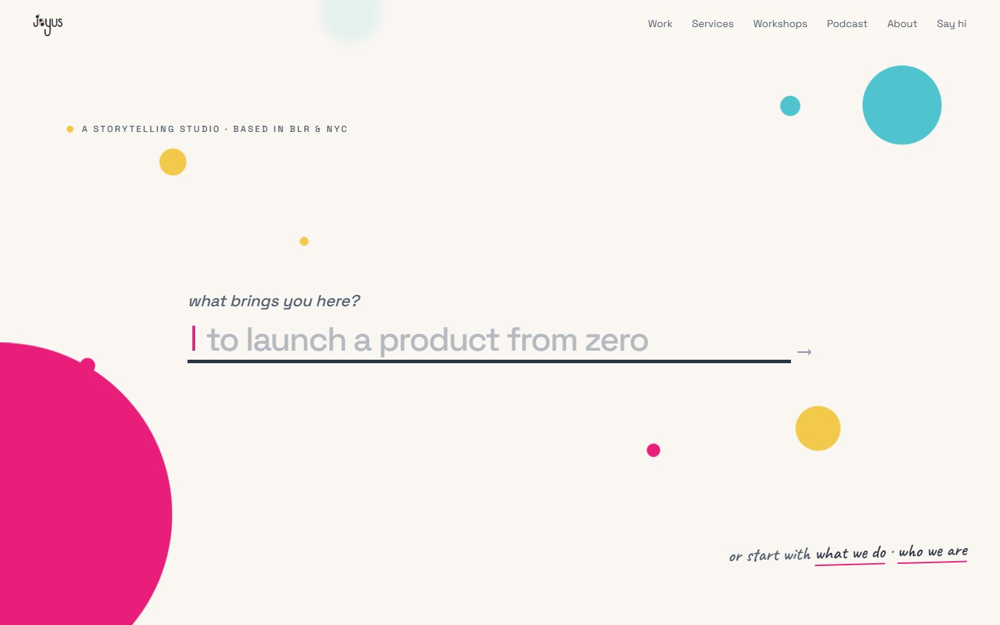
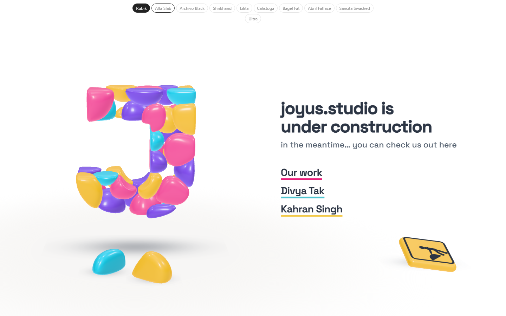
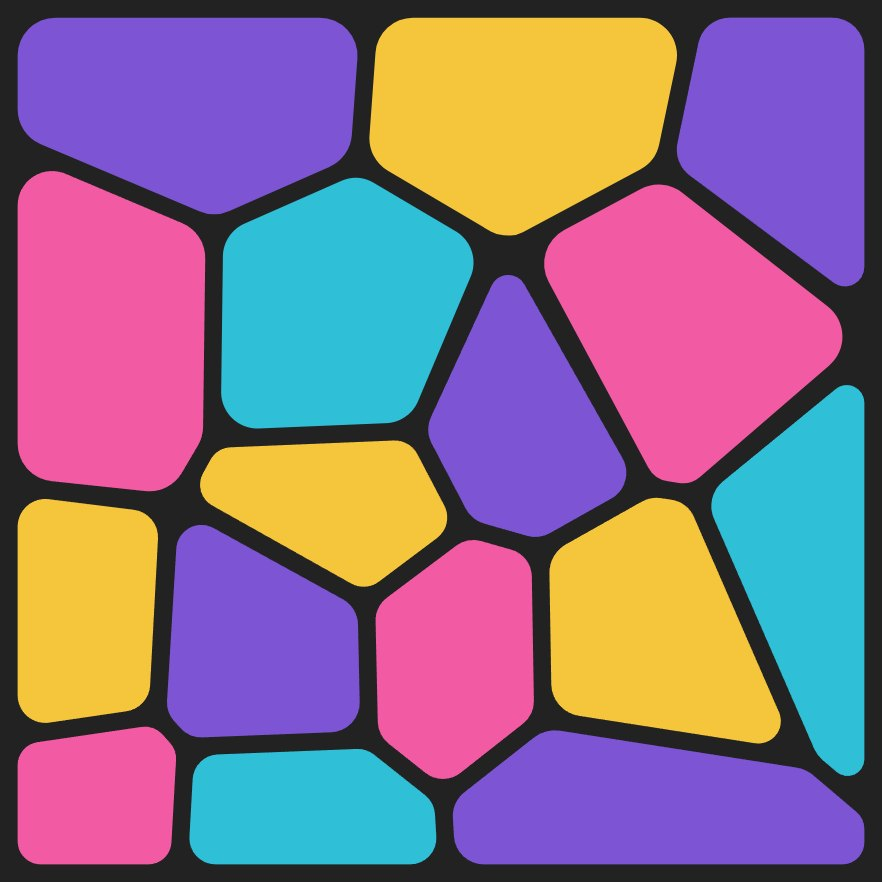
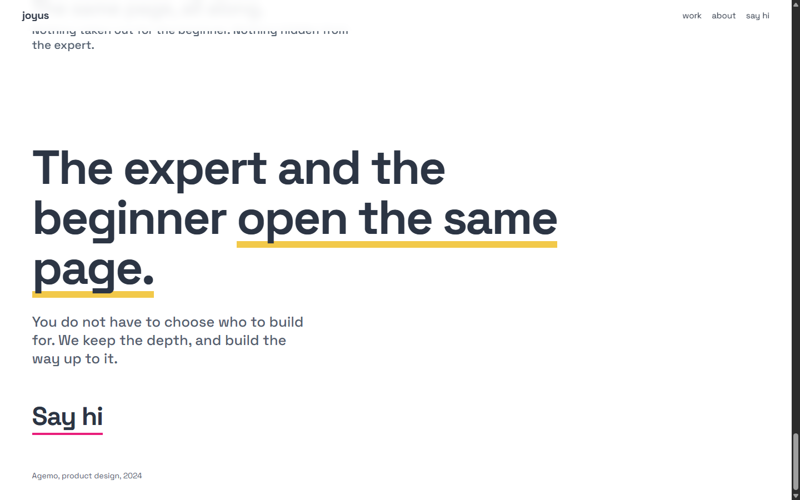

Joyus brand, part by part: now and new
Who we are
| Part of a brand guide | Now | New, the Voronoi direction | Where it stands |
|---|---|---|---|
| A word from the founders |
The work deck's first page. |
Why Voronoi: pieces with identities of their own, that also belong to a whole. Divya on herself, Kahran and the studio. The brand lab's design document. |
Written in two places. Not one statement. |
| Vision and mission | Not written as such. | Not written. | Open |
| Tagline |
|
On every post the lab makes. |
Two in use. Neither chosen over the other. |
| What we do, in a few words | Branding. Website & Product. Strategy. Storytelling. The site map's types of work. |
strategy, brand, code, design, research The words inside the cells on a lab post. |
Two lists that do not match. |
| Values | None listed. | Individuality and belonging. Surprise and recognition. Named in the lab's design document as the tension the pattern holds. |
Stated for the pattern, not yet for the studio. |
| Who it is for | The bet: who the customer is and what has to be true for them to buy. Studies 69 and 72. | The same. The pattern does not change it. | Exists |
| How the names fit together | Joyus Studio, and the games and comics made under it. | Not addressed. | Open |
What it looks like
| Part of a brand guide | Now | New, the Voronoi direction | Where it stands |
|---|---|---|---|
| The mark | The 2023 logo: the name in rounded letters, with clusters of small dots round the j and the o. A plain version and one with two large shapes. joyus On the site since: only the name, lowercase, Space Grotesk 700. |
A J made of cells: flat with dark seams, or as gummy stones. A different J every time it is made. |
The gummy J is live on joyus.studio. No one fixed mark, by design. |
| Rules for the mark | None. | Neighbours never share a colour. The margin round the outside equals one full gap. A cell's corners round in proportion to its size. |
Held by the lab's code and its tests. Not written for a person to follow. |
| A second mark | None. | A circle of cells. A cube of stones. |
Made. Neither has been given a job. |
| Colours | #2C3544#E91E7B#4FC4CF#F2C94A#FAF7F2 Ink, pink, cyan, yellow. Paper on the old site; white since. |
#f25aa3#7d55d4#2fc0d8#f5c63c Four stone colours. Purple is new; the other three are the old accents, softer. |
Structure agreed. Exact shades and finish still open. |
| What each colour is for | Pink underlines the word that matters. Yellow is a highlighter. Cyan is hardly used. Text is always ink. |
No colour has a job. Every cell takes one, and the only rule is about neighbours. |
Open: which colour words sit on, and what text is set in. |
| Type | Heavy and tight a hand for asides Space Grotesk for everything. Caveat for asides on the old site. |
Cohesion without standardising The lab sets its posts in Montserrat, extra bold. On the live page the J cycles through ten display faces and the words stay in Space Grotesk. |
Three typefaces in play across the two. Not decided. |
| Graphic elements |  Scattered dots on the old site. Hairlines, a 2px ink rule and thick coloured underlines on the pages since. |
The cells themselves: rounded, with a gap between. Five ways they meet words: a word in each cell, a cluster, an opening, a drift from the corners, a close-up. |
Made in the lab at 1:1, 4:5 and 9:16. |
| A frame for content | None. | The cells open and leave a space for the words. |
Made. The lab found the headline can come out smaller than the footer in this one. |
| Illustration | None, beyond the dots. | The stones in three dimensions: gloss, satin, frost. |
Liked. Finish not chosen. |
| Photography | None. | None. The renders stand in for it. | Open |
| How we sound | Kahran's sentences, used whole. Plain words on the case-study pages. |
Not written. The lab only says: no slogans inside the tool. | Practised, never written down as a part of the brand. |


Parts the new brand has that a guide like this has no page for
| Part | Now | New, the Voronoi direction | Where it stands |
|---|---|---|---|
| Movement | A colour sweeps into a link when you point at it. |
 The stones fly in and build the J, hold, let go, and build it again in the next typeface. |
Live on joyus.studio. |
| The thing that makes it | Nothing. Each page is drawn by hand. |  A generator. Press Generate and it makes a new pattern inside the rules. It is judged on range, coherence, reliability and control. |
Working, for Divya and Kahran's own use. |
| Where it gets used |  Site pages: white, Space Grotesk, one underline. |
Posts, a deck page, a volume. Nothing yet for a site page. |
The two have not met: the site's pages carry none of the cells, and the lab makes no site page. |